<div class="initial-content">
  <div id="main" role="main">

  <article class="page has-sidebar" itemscope itemtype="https://schema.org/CreativeWork">
    <meta itemprop="headline" content="Creating a Simple Chatbot using NodeJS on OCI">
    
    <meta itemprop="datePublished" content="2022-05-26T19:42:00+00:00">
    


    <header>
      <h1 id="page-title" class="page__title" itemprop="headline">Creating a Simple Chatbot using NodeJS on OCI
</h1>
      


    </header>

    <section class="page__content" itemprop="text">
      

        <h2 id="introduction-why-this">Introduction: Why this?</h2>

<picture class="">
                <source srcset="assets/racterexaemplasdfsdfsdf.jpg 1x" />
                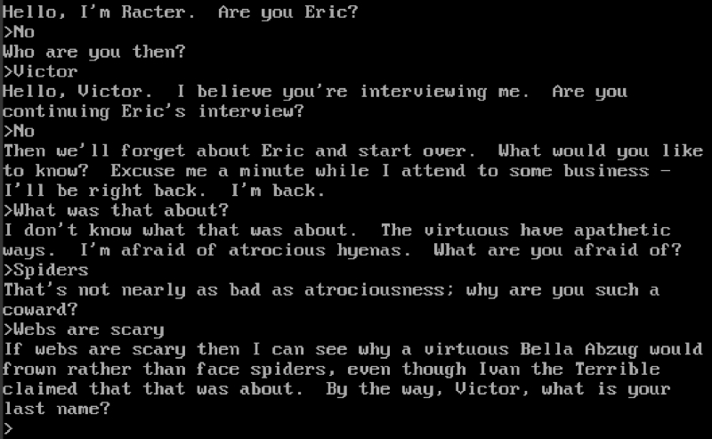
            </picture>

<p>When I started this project I wanted to make a Racter-like chatbot. For those who don’t remember, Racter was a weird little text “conversation simulator” released in the 1980s by publisher Mindscape, known for educational software. I wound up playing quite a bit on my dad’s Apple //c instead of my computer because his had a printer, and you could print out conversations – presumably to share them with friends. A literal “share sheet,” if you will.</p>

<picture class="">
                <source srcset="assets/apple2cvhanodejsasdfsd.jpg 1x" />
                
            </picture>

<p>However, what I wound up doing is establishing the beginnings of a home assistant. Racter is pretty outdated tech, as it just takes nouns you say and adds them into sentences. Very much like Mad Libs, but weirder. You can actually <a href="https://www.myabandonware.com/game/racter-4m/play-4m">try out Racter on the Abandonware site</a>. Let’s face it, home assistants are much more conversational and practical these days.</p>

<p>I have a mix of IOT devices in my home, but have lately become a fan of open source projects that integrate the disparate platforms (Amazon, Apple, and Google, primarily) and increase privacy. To start, I looked around for some existing “chatbots” and found <a href="https://github.com/Programmer101N/chatbot_nodejs">this clever implementation</a> by <a href="https://github.com/Programmer101N">Naman Baranwall</a>, which uses a little bit of training to choose the best response. Obviously we’ll be adding to this later, but for now, I wanted to show how to get this up and running on Oracle Cloud Infrastructure (OCI). It was honestly a lot easier than I thought it would be! But note that we’re going for the shortest distance between two points, and that’s getting the application running using NodeJS. If this were a production environment, we’d likely use bastions and some stricter access controls. All in good time!</p>

<h2 id="pre-requisites">Pre-Requisites</h2>

<ul>
  <li>OCI Free Tier account</li>
  <li>Wait, that’s it???</li>
</ul>

<p>You may want a GitHub account if you want to branch the project as I did for extension later, but honestly this is all so simple you’ll be amazed.</p>

<h2 id="steps">Steps</h2>

<ol>
  <li>
    <p>Create a compartment</p>

    <p>Menu: Identity and Security &gt; Instances</p>

    <picture class="">
            <source srcset="assets/2instancesinmycompartment.png 1x" />
            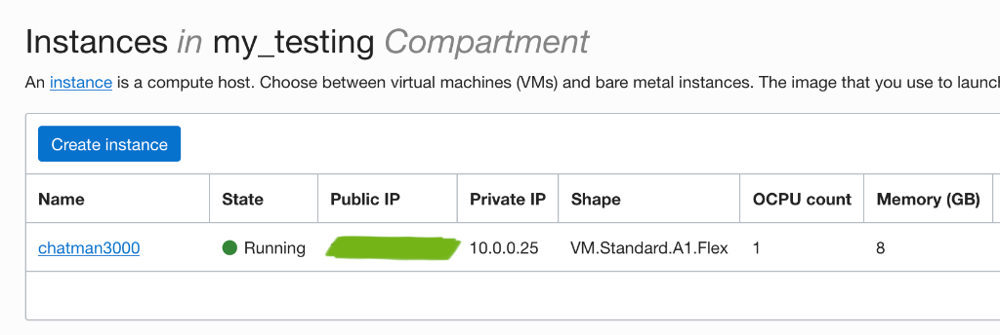
        </picture>

    <p>The point is that we’re not messing about in our root compartment, just as we like to avoid mucking about in root on our personal machine, right? I created a very simple compartment and just made the parent my root, but I also used this for my Virtual Cloud Network (VCN) so I can connect later. Identity and Security is also where you would create users, groups, and all manner of access controls. But, it’s just little ol’ us, so we’ll just go in as admins.</p>

    <picture class="">
            <source srcset="assets/2createinstanceinmycompartment.png 1x" />
            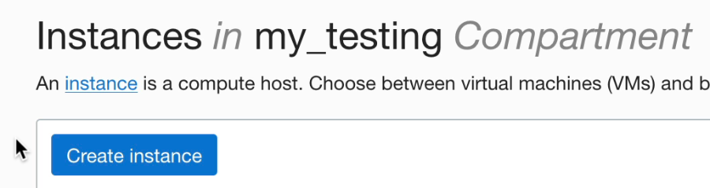
        </picture>

    <picture class="">
            <source srcset="assets/2createcompartmentchatbotnodejs.png 1x" />
            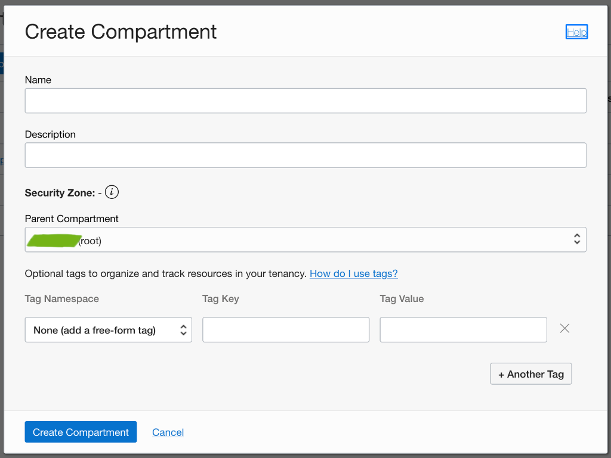
        </picture>
  </li>
  <li>
    <p>Create a VCN if you don’t have one</p>

    <p>Menu: Networking &gt; Virtual Cloud Networks</p>

    <p>This is where my advance prep of a compartment came in handy, as I’d already set up a VCN using default route tables and it has a public IP so I can <code class="language-plaintext highlighter-rouge">ssh</code> in later. VCN’s are really powerful, but for our purposes all we need is a subnet and a public IP to steer to, all of which is easy to set up using the tool provided. Of course, almost all of these things can be automated using something like Terraform, but we’re just testing a chatbot for ourselves today.</p>

    <picture class="">
            <source srcset="assets/vcnsinmycompartmentnodejsproj.png 1x" />
            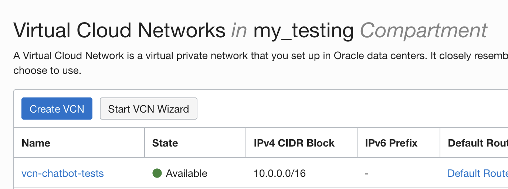
        </picture>
  </li>
  <li>
    <p>Create a compute instance</p>

    <p>Menu: Compute &gt; Instances</p>

    <p>Here’s where things get streamlined. Oracle does a good job of choosing a general purpose shape, but we’re going to adjust it so it’s free-tier and connecting to the Internet.</p>

    <picture class="">
            <source srcset="assets/2createcomputeinstancechatbotproj.png 1x" />
            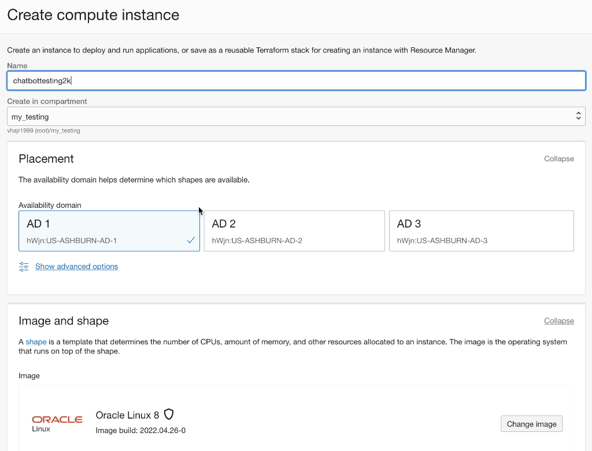
        </picture>

    <p>Instead of AMD, we’ll go with Ampere, an exceptionally good value (free-tier, remember?) just click on change shape…</p>

    <picture class="">
            <source srcset="assets/2amdchangeshapeinocicompute.png 1x" />
            
        </picture>

    <p>Also, don’t forget to change the memory to 8GB</p>

    <picture class="">
            <source srcset="assets/2amperealwaysfreecomputeshapetouse.png 1x" />
            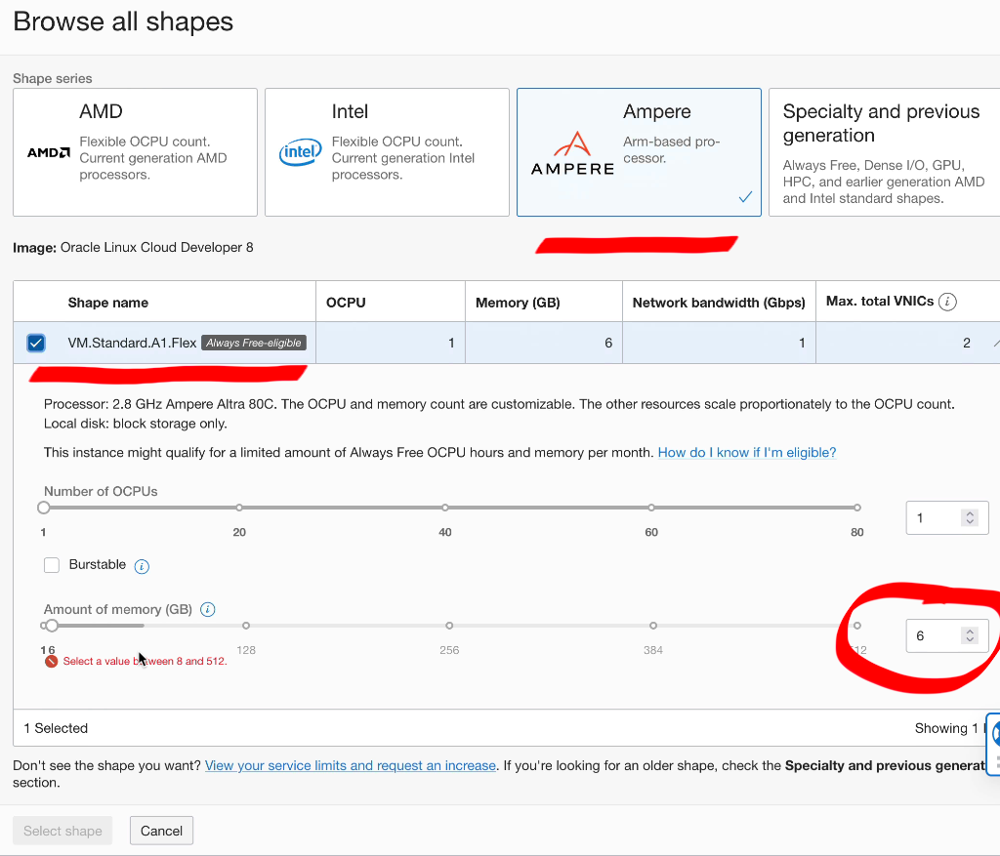
        </picture>

    <p>As you scroll down, you’ll see that our previous VCN is available, how handy! That means we can assign a public IP to this fellow and <code class="language-plaintext highlighter-rouge">ssh</code> in shortly.</p>

    <picture class="">
            <source srcset="assets/2computewizardnetworkingpart.png 1x" />
            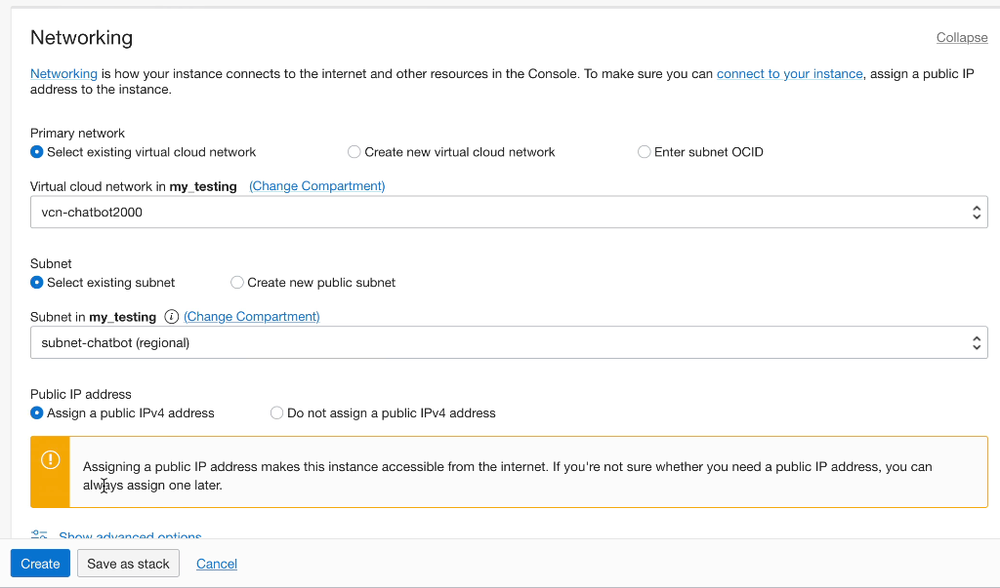
        </picture>

    <p>And to <code class="language-plaintext highlighter-rouge">ssh</code> in, we’ll need the private key, which I just generate right here while I’m spinning up my compute, and of course save it and the public key somewhere safe (more on this in a bit).</p>

    <p>I personally provision 50GB of storage, but you don’t have to as OCI will provision some block memory to start with.</p>

    <picture class="">
            <source srcset="assets/2privpubkeysandstorage.png 1x" />
            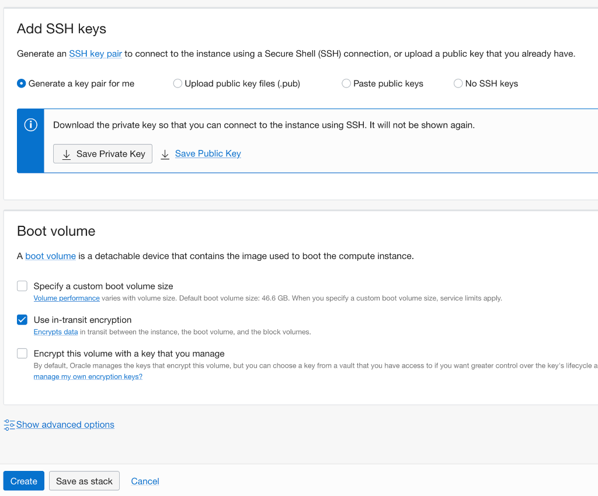
        </picture>

    <p><em>NOTE: You can save these as a stack for later use as well, which is also handy.</em></p>

    <p>To review, we’ve just taken 3 steps to spin up a publicly-available free-tier compute instance so we can start creating our dev environment and chances are you haven’t even finished that beverage sitting too close to your keyboard!</p>
  </li>
  <li>
    <p>Connecting to our compute instance</p>

    <p>It’ll take a minute for the compute instance to spin up, but when it does, the panel will show you the public IP, which you’ll need to <code class="language-plaintext highlighter-rouge">ssh</code> in.</p>

    <p>Menu: Compute &gt; Instances &gt; Instance Details</p>

    <p>There’s even a handy copy link!</p>

    <picture class="">
            <source srcset="assets/2computepubipexampleco.png 1x" />
            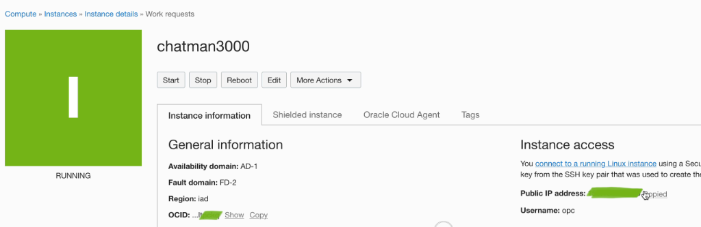
        </picture>

    <p>I’m using Terminal on my Mac, so I <code class="language-plaintext highlighter-rouge">cd</code> over to where I’m storing my private key, <code class="language-plaintext highlighter-rouge">chmod 400</code> it, then:</p>

    <div class="language-console highlighter-rouge"><div class="highlight"><pre class="highlight"><code><span class="gp">ssh -i &lt;path to private key&gt;</span><span class="w"> </span>opc@&lt;public IP address&gt;
</code></pre></div>    </div>

    <p>And of course, when prompted by security, you want to continue connecting, which will add you to the list of known hosts and you’re off to the races!</p>
  </li>
  <li>
    <p>Installing what we need</p>

    <p>As we’re using nodejs, we’ll want to install it and then create a folder for our project, then initialize a repo in that folder to install our modules. We’ll also set up some text files with code and parameters.</p>

    <p>Oracle has a nifty <code class="language-plaintext highlighter-rouge">yum</code> repo for NodeJS and all we need to do is install the latest NodeJS using this command:</p>

    <div class="language-console highlighter-rouge"><div class="highlight"><pre class="highlight"><code><span class="go">sudo yum install nodejs
</span></code></pre></div>    </div>

    <p>Navigate to your home folder, and then <code class="language-plaintext highlighter-rouge">opc</code> (the admin user for this VM), and create a folder for your project. Like the tutorial, I named mine <code class="language-plaintext highlighter-rouge">chatbot_nodejs</code>.</p>

    <p>I branched the repo beforehand so I could extend it a bit later, but either way we initialize it in that folder with <code class="language-plaintext highlighter-rouge">npm init</code> and use <code class="language-plaintext highlighter-rouge">npm i node-nlp</code> to install the appropriate modules.</p>

    <p>Note that the <code class="language-plaintext highlighter-rouge">package.json</code> file will look for an <code class="language-plaintext highlighter-rouge">index.js</code> file, and we add two scripts: <code class="language-plaintext highlighter-rouge">train.js</code> and <code class="language-plaintext highlighter-rouge">index.js</code>, plus the repo for our dependencies.</p>

    <picture class="">
            <source srcset="assets/packagejsonfileshownchatbot.png 1x" />
            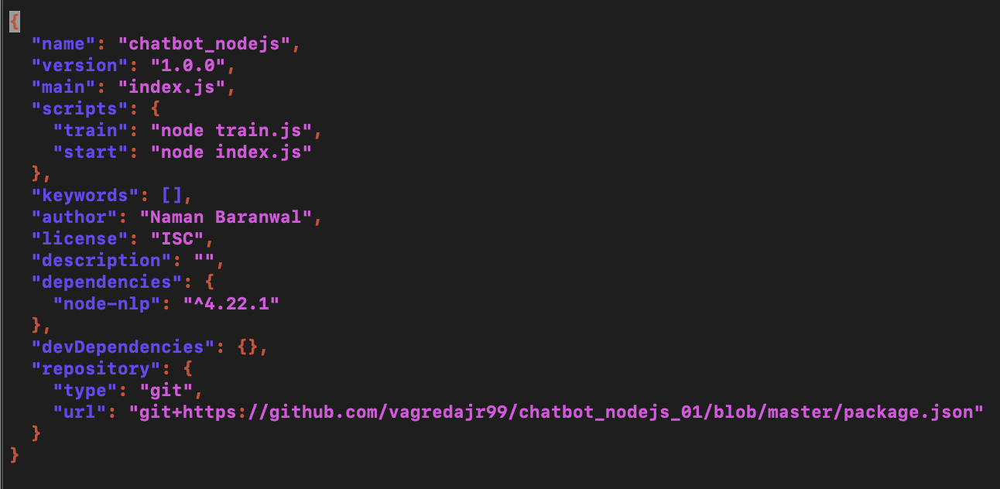
        </picture>
  </li>
  <li>
    <p>Writing and testing</p>

    <p>The way all of this works is by storing a set of “intents” as questions and responses, then using the <code class="language-plaintext highlighter-rouge">node-nlp</code> module to weigh responses over time.</p>

    <p>The <code class="language-plaintext highlighter-rouge">train.js</code> file is where we have the code to actually teach our model. We also create an <code class="language-plaintext highlighter-rouge">index.js</code> file, which will get everything loaded and set up – it’s pretty simple right now, but has the capacity to extend itself to a more conversant home assistant in the future.</p>

    <p>As you can see in <a href="https://medium.com/geekculture/create-chatbot-with-nodejs-cf3d8bc3f302">the article</a>, we import the <code class="language-plaintext highlighter-rouge">NlpManager</code> from <code class="language-plaintext highlighter-rouge">node-nlp</code> so we can save and process what goes on, then create a new instance of the <code class="language-plaintext highlighter-rouge">NlpManager</code> class, read input from the terminal, send it to the manager for a response, and then display that response.</p>

    <p>Nothing too fancy just yet, but we’re laying some important groundwork. The term “intent” here is very specific, referring to the natural language processing (NLP) we’re using to train our system. This can be used in many ways, from knowing preferences to avoiding specific words to understanding what a person is saying better over time. Just like it reads, “intent” is what the person is trying to say. You can <a href="https://medium.com/mysuperai/what-is-intent-recognition-and-how-can-i-use-it-9ceb35055c4f">read more about intent recognition in this excellent piece by Christopher Marshall</a>.</p>

    <p>The model needs something to start with, so we create a couple of documents in our intents folder (inside our project folder): one for “hello” and one for “goodbye.” The author creates a set of questions and answers, which can, of course, be as long as you like. I took the liberty of changing a few, including one that calls me “FNAME” as an homage to the days when I would get press releases gone horribly awry on the database side. If you know, you know.</p>

    <p>You could create many of these to accomodate frequent queries like weather, sports, news, etc., and then create data agents who fetch what you need and return it using phrases that (over time) will be weighed for preference and ultimately “converse” in a more natural way. Integrating live data is something we’d love to do here, but we’ll wait to do this another day.</p>

    <p>Once I fixed my own minor syntax errors (check those commas, people!), the whole thing worked just as expected. First you run <code class="language-plaintext highlighter-rouge">train</code> to get the module initialized and ready (you’ll see a bunch of timing to let you know it’s doing the work), then run <code class="language-plaintext highlighter-rouge">start</code> to get the chatbot chatting.</p>

    <picture class="">
            <source srcset="assets/chatbotactuallyworkingnodejs34.png 1x" />
            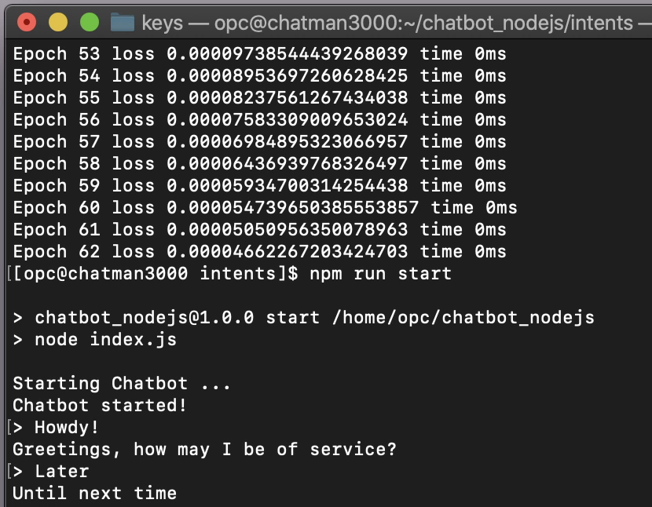
        </picture>
  </li>
</ol>

<h2 id="next-steps-iot">Next Steps: IOT</h2>

<p>OK, maybe not the very next step, but eventually this could become my own little Siri or Alexa, running in OCI, tied to systems in my house, capable of giving me whatever information I need on request. Sort of like a certain comic book character who came to life on screen not too long ago…</p>

<p>You can try all this for yourself by setting up a free tier account, and reviewing <a href="https://medium.com/geekculture/create-chatbot-with-nodejs-cf3d8bc3f302">the article</a> for the chatbot code. 
Join us on our <a href="https://bit.ly/devrel_slack">public Slack</a> if you do some cool stuff with it!</p>


          <div class="sidebar sticky">
    <!-- <p><strong>Tags:</strong> <span class="tags">

            
            <a class="animated-link tag" href="/topics/open-source">open-source</a>
            <a class="animated-link tag" href="/topics/oci">oci</a>
            <a class="animated-link tag" href="/topics/nodejs">nodejs</a>
            </span>
    </p> -->
  


<div itemscope itemtype="https://schema.org/Person">

  

  <div class="author__content">
    
      <h3 class="author__name" itemprop="name">Victor Agreda</h3>
    
    
  </div>

  <div class="author__urls-wrapper">
    <ul class="author__urls social-icons">
      

      

      

      

      

      

      

      

      

      

      

      

      

      

      

      

      

      

      

      

      

      

      

      

      

      

      
    </ul>
  </div>
</div>

  
  
  

  </div>


      </section>

      <footer class="page__meta">
        
        


        

  <p class="page__date"><strong><i class="fas fa-fw fa-calendar-alt" aria-hidden="true"></i> Updated:</strong> <time datetime="2022-05-26T19:42:00+00:00">May 26, 2022</time></p>


      </footer>
    </div>

  </article>
</div>

</div>

